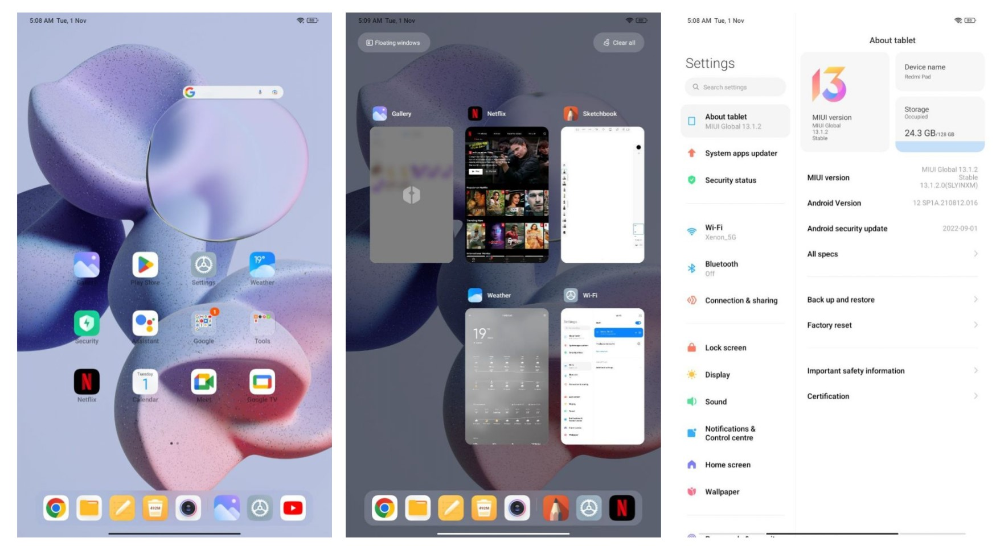

1,058

734

Save

The tablet market was dwindling since the launch of low-cost smartphones with big screens. Another reason for the decline of Android tablets was Android’s poor user experience, and app design optimizations for larger screens were nowhere near Apple’s iPad. However, the COVID-19 pandemic created the perfect environment for Android tablets to resurface the market, thanks to higher demand for online classes for kids. This inspired OEMs to create brand-new, cutting-edge tablets that were affordable. On top of this, the Android 12L release gave us a glimpse of Google’s serious consideration of optimising the Android user experience as a result.
Cut to the first half of 2022, Xiaomi decided to take a chance and test the Indian market by releasing its Xiaomi Pad 5 tablet months after it was released internationally. The risk paid off handsomely, as the company was able to sell all of its initial stock within hours. The company has returned with a new tablet but under Redmi branding this time.
The Xiaomi Redmi Pad is a budget tablet that makes an effort to offer everything to everyone at a reasonable price. It starts at just ₹14,999 and includes a large, 2K resolution display with a 90Hz refresh rate, a sizable battery, a decently powerful Helio G99 processor, and many other modern features. We have been using the Redmi Pad for a little more than three weeks and are prepared to respond to all of your burning questions regarding this awesome piece of technology. So let’s dive into our Xiaomi Redmi Pad review.
The Redmi Pad ships with the MIUI 13 overlay, which is based on Android 12. We are a bit disappointed, though, as the tablet doesn’t come pre-installed with the tablet-optimised version of Android: Android 12L. The software is remarkably tidy and fluid, though. The user interface showed no indication of any stutter in the UI during our three weeks-long use. Additionally, we found no issues with the software, and switching in and out between modes was a breeze. It is extremely uncommon to find bloatware in Xiaomi products, but MIUI 13 for Pad practically lacks it, which is a good thing.
The number of features that MIUI puts on top of Android is something that is frequently seen. These consist of floating windows, split-screen multitasking mode, and more. Even while certain apps do not natively support split-screen, Xiaomi has said that it is collaborating with more developers to improve the Redmi Pad experience.
One problem we faced during the Redmi Pad review is its RAM management. The aggressive RAM management on MIUI 13 devices has been a recurring problem, and the Redmi Pad frequently shut down background apps to make way for the active app. If not addressed, this issue could irritate users.
Despite being a budget Android tablet, the Redmi Pad does not appear like one. It has an excellent in-hand feel because of its all-metal body. This Android tablet feels lighter than its actual weight of 465g, thanks to the flat frame design and even weight distribution. At 7.1mm, it is also relatively thin. While the edges of the tablet are flat, the corners are rounded to prevent digging into your hands, whether using it in portrait or landscape mode.
The tablet comes in three colour options: Graphite Gray, Mint Green, and Moonlight Silver. For this review, we had the Graphite Gray version. Frankly, the Green colour is understated and blends well with other Xiaomi ecosystem products, such as the green version of the POCO F4. The body of the tablet has a matte textured finish, which deters most fingerprints and smudges.
The tablet comes in three colour options: Graphite Gray, Mint Green, and Moonlight Silver. For this review, we had the Graphite Gray version. Frankly, the Green colour is understated and blends well with other Xiaomi ecosystem products, such as the green version of the POCO F4. The body of the tablet has a matte textured finish, which deters most fingerprints and smudges.
We can appreciate the Redmi Pad’s wide, 10.61-inch display with a 2,000 x 1,200 pixels resolution. The device has a slight advantage over the competition because of its 90Hz refresh rate display and compatibility with up to a billion colours. The 90Hz refresh rate results in smooth animations and transitions, enhancing the user experience. In contrast to the Xiaomi Pad 5, though, there is no HDR10+ certification or Dolby Vision support here, but the 10-bit screen is still capable of 70% NTSC coverage and has a peak brightness of 400 nits.
The panel’s 15:9 aspect ratio makes it perfect for a variety of applications, including gaming, working, and watching videos. Additionally, the Redmi Pad has Widevine L1 certification, allowing you to watch Full HD content on Netflix and other video streaming (OTT) apps. This, coupled with the quad-speaker setup and Dolby Audio, makes for a solid streaming setup. The panel is compatible with any active styluses because there is no support for third-party accessories, which is still another drawback given that the closest rival, the OPPO Pad Air, includes one. Customers can still grab an inexpensive capacitive stylus from Amazon that works quite well.
A sizable 8,000mAh battery powers the Redmi Pad. The tablet has a loop test duration of approximately 15 hours. It can easily last 3–4 days with mixed-use between charges because of the size of the screen and around a 5% battery loss in standby mode. The tablet ships with a 22.5W fast charger in the box, although the maximum charging power is only 18W. With the supplied brick, it takes over 2 hours and 30 minutes to fully top-up the battery.
© 2022 Venom.com All rights reserved